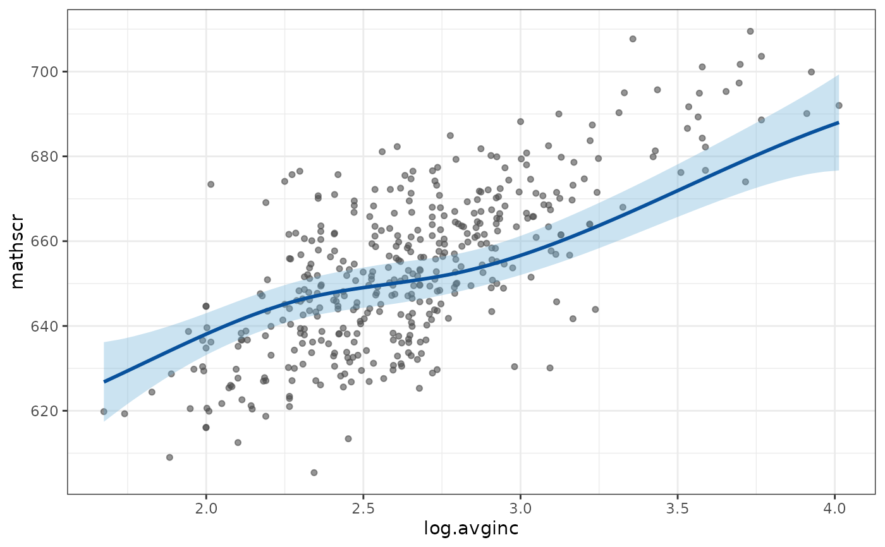

Test scores, school characteristics and student demographics of 420 school districts in California, 1998-1999
(kindergarten to grade 6 or 8), as used by Stock and Watson (2007) and in package Ecdat. The data of the
semiparametric example with several smooth terms and two random intercepts in the overview article
(vignettes/articles/overview.Rmd).
Usage
data(Caschool)Format
A data frame with 420 rows and 17 columns:
- distcod
district code.
- county
county (a factor with 45 levels).
- district
district (a factor).
- grspan
grade span of the district:
"KK-06"or"KK-08".- enrltot
total enrollment.
- teachers
number of teachers.
- calwpct
percentage of students qualifying for CalWORKs (income assistance).
- mealpct
percentage of students qualifying for a reduced-price lunch.
- computer
number of computers.
- testscr
average test score (the mean of
readscrandmathscr).- compstu
computers per student.
- expnstu
expenditure per student.
- str
student-teacher ratio.
- avginc
district average income (in USD 1000).
- elpct
percentage of English learners.
- readscr
average reading score.
- mathscr
average math score.
Source
California Department of Education, data of 1998-1999; package Ecdat (Croissant and Graves), data set
Caschool.
References
Stock, J. H. and Watson, M. W. (2007). Introduction to Econometrics, 2nd edition. Addison-Wesley, chapters 4-7.
Examples
data(Caschool)
Caschool$log.avginc <- log(Caschool$avginc)
# \donttest{
# math scores against three covariates, each a smooth curve, with random
# intercepts for counties and grade spans
fit <- semireg_tmb(mathscr ~ s(calwpct, bs = "os", k = 12) + s(log.avginc, bs = "os", k = 5) +
s(compstu, bs = "os", k = 12) + (1 | county) + (1 | grspan), data = Caschool)
semipred(fit, covariate = "log.avginc")$plt

# }